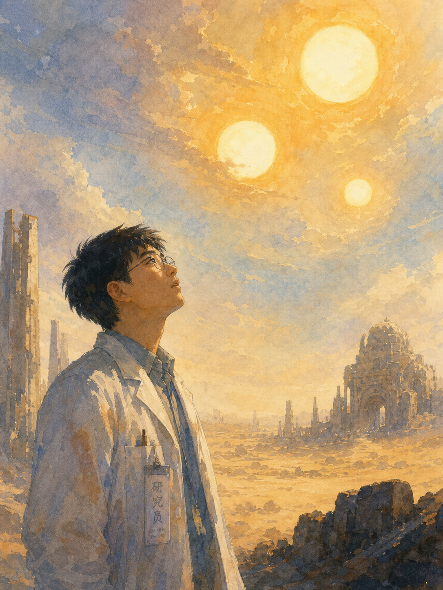
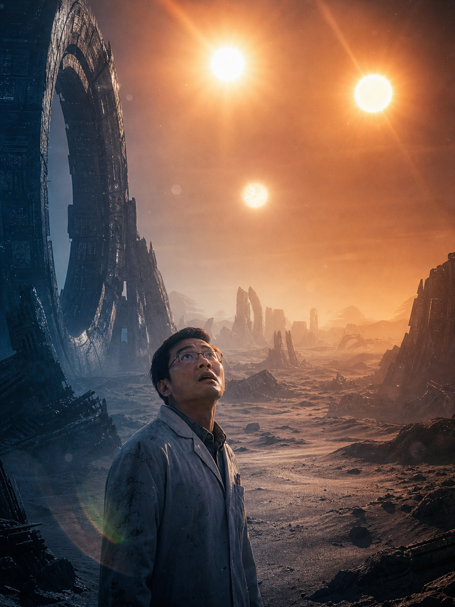
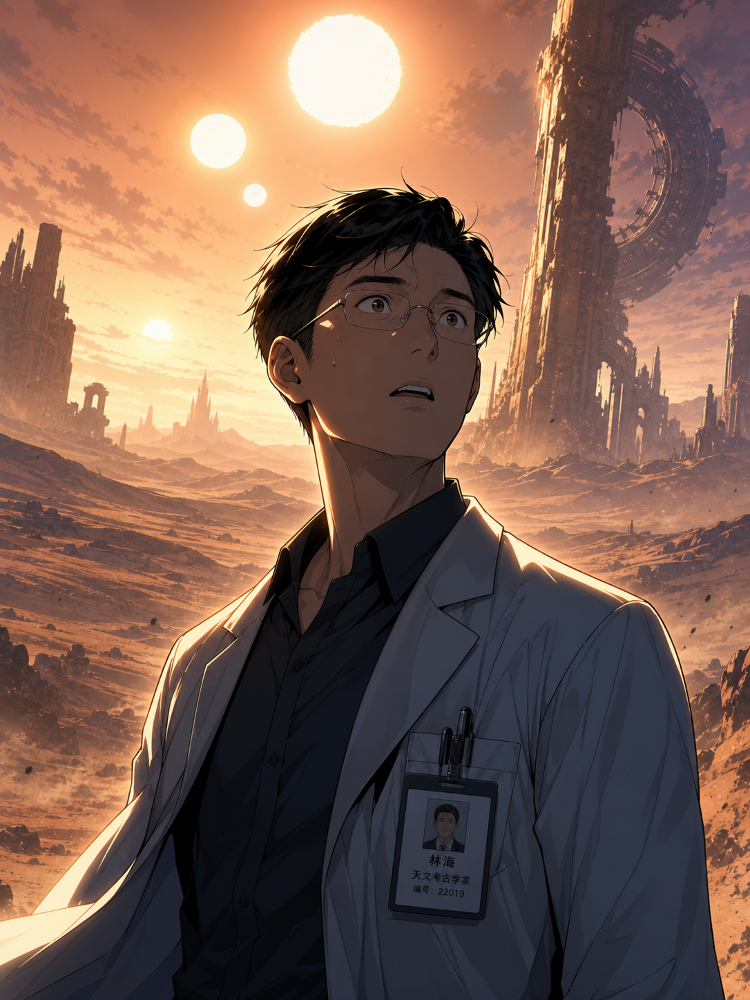
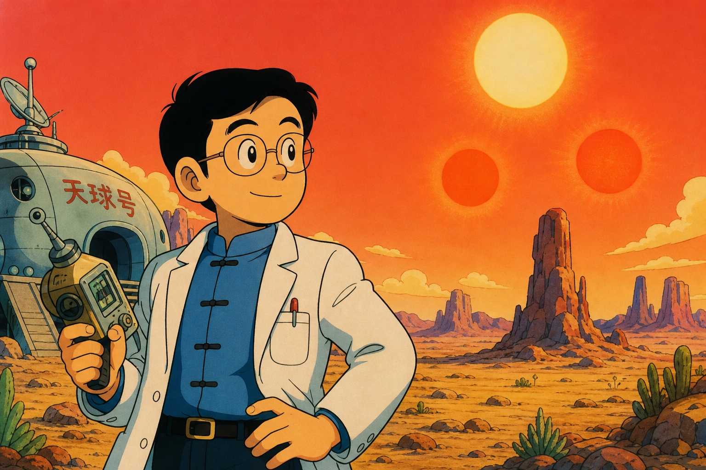

Style 1: 일본 만화풍
Japanese Manga Style
강렬한 잉크 아웃라인, 셀 셰이딩, 하프톤 패턴. 역동적인 구도와 고대비 흑백 연출이 특징.
아키라, 공각기동대, 진격의 거인 계열.
강렬한 선
셀 셰이딩
하프톤
고대비
흑백
Japanese manga style, dramatic scene: a male Chinese scientist in his 30s with short black hair and thin glasses, standing in a vast alien desert landscape under three suns in the sky. Bold ink outlines, cel shading, halftone dot patterns, dynamic low-angle composition, monochrome with high contrast, detailed cross-hatching linework. The scientist looks up in awe and terror at the three suns casting triple shadows. Ancient ruined stone structures scattered across the barren desert. Mysterious oppressive atmosphere. cf: Akira, Ghost in the Shell manga, Battle Angel Alita. Vertical manga panel format, 3:4 ratio.

Style 2: 수채화풍
Watercolor Style
부드러운 색 번짐과 몽환적 분위기. 흐르는 붓터치와 은은한 색조가 SF의 경이로움을 감성적으로 표현.
지브리 수채화, SF 컨셉아트 계열.
색 번짐
몽환적
감성적 조명
흐르는 붓터치
은은한 색조
Watercolor painting style, ethereal scene: a male Chinese scientist in his 30s with short black hair and thin glasses, standing in a vast alien desert landscape under three suns in the sky. Soft color washes in warm golden and cool blue tones, dreamy atmosphere, ethereal lighting from the triple suns, flowing brushstrokes, muted palette with vibrant golden accents. The scientist looks up with wonder and melancholy at the alien sky. Ancient ruined architecture partially visible through desert haze. Studio Ghibli watercolor quality, sci-fi concept art. Vertical composition, 3:4 ratio.

Style 3: 사실적 SF풍
Realistic Sci-Fi Style
사진 수준의 디테일과 드라마틱한 시네마틱 조명. 영화 포스터 같은 완성도로 시각적 압도감 극대화.
인터스텔라, 블레이드 러너 2049 계열.
시네마틱
8K 렌더
볼류메트릭 조명
필름 그레인
사실적
Photorealistic sci-fi illustration, cinematic scene: a male Chinese scientist in his 30s with short black hair and thin glasses, standing in a vast alien desert landscape under three suns in the sky. Cinematic lighting with volumetric god rays from the triple suns, hyper-detailed 8K render, dramatic wide-angle composition, film grain texture, lens flare. The scientist looks up in awe and existential terror, small human figure against cosmic scale. Ancient alien megastructures in ruins across the desert. Color grading: warm orange and cold blue split toning. cf: Interstellar poster, Blade Runner 2049, The Expanse. Vertical format, 3:4 ratio.

Style 4: 한국 웹툰풍
Korean Webtoon Style
세련된 디지털 칼라와 부드러운 그라데이션. 깔끔한 선과 풍부한 표정으로 현대적 감성.
솔로 레벨, 노블레스, 신의 탑 계열.
디지털 칼라
그라데이션
모던
깔끔한 선
풍부한 표정
Korean webtoon style, dramatic scene: a male Chinese scientist in his 30s with short black hair and thin glasses, standing in a vast alien desert landscape under three suns in the sky. Vivid digital colors with smooth gradients, modern aesthetic, clean precise linework, highly expressive character with wide eyes showing wonder and fear, polished professional finish. The scientist is backlit by the triple suns creating a dramatic silhouette edge light. Ancient mysterious ruins in soft-focus background. Rich color palette: warm oranges and cool blues. cf: Solo Leveling art, Tower of God, Noblesse. Vertical webtoon panel format, 3:4 ratio.

Style 5: 아톰 × 닥터슬럼프 결합
Astro Boy × Dr. Slump Fusion
오사무 데즈카(아톰)의 둥근 캐릭터 비율과 큰 눈 + 토리야마 아키라(닥터슬럼프)의 깔끔한 굵은 선과 통통한 카툰 형태 결합.
따뜻한 레트로 셀 셰이딩 컬러, 향수어린 손그림 느낌.
데즈카풍
토리야마풍
레트로 셀
밝은 색감
카툰
Retro 1960s-1980s classic Japanese anime style combining Osamu Tezuka Astro Boy and Akira Toriyama Dr Slump aesthetics. A male Chinese scientist in his 30s with short black hair and thin glasses, standing in a vast alien desert under three suns. Round Tezuka-style character proportions with large expressive eyes, Toriyama-style clean bold outlines and cartoonish shapes. Warm nostalgic cel-shaded colors, retro anime hand-painted cel look. Bright saturated palette. Vertical manga panel format 3:4 ratio.